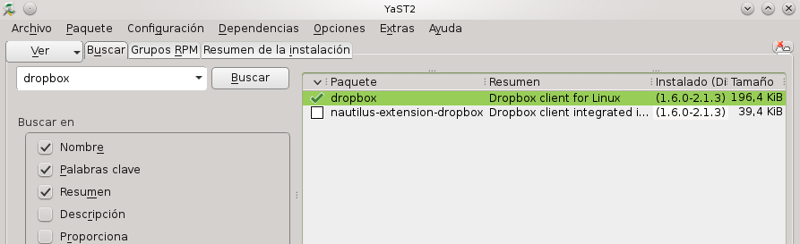
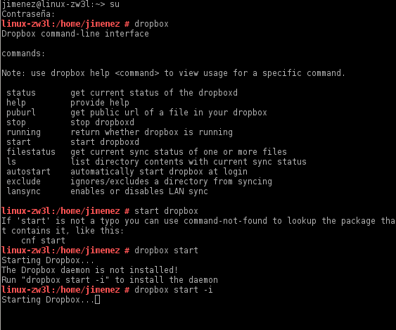
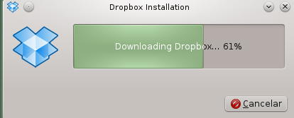
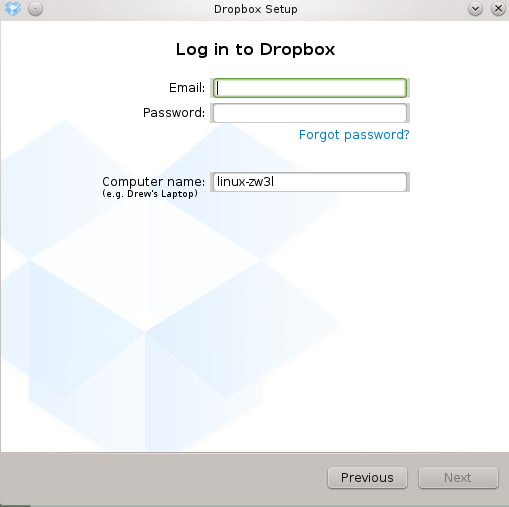
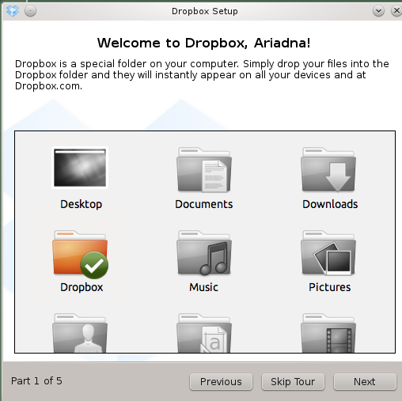
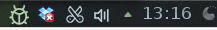

- Módulo: Fundamentos de Hardware
- Título del trabajo A3: Almacenamiento en la nube
- Componentes del grupo: Ariadna Jiménez
- Curso Académico: 2013/2014
- Fecha de entrega: 24 de Abril de 2014
En la máquina de Windows ha sido el modo más fácil y cómodo de tener este programa , sólo debemos ir a la página principal de Dropbox y Descargarlo
En el caso de OpenSuse, hemos descargado el dropbox desde el gestor de paquetes en el Yast.

Luego, entramos como root en la terminal y ejecutamos unos comandos que veremos en la imagen para que se inicie la descarga e instalación del programa.


Después, como en Windows, nos saldrá una ventana que nos permite conectar nuestro usuario de Dropbox, sólo que cambia un poco la interfaz.

Nos permite elegir donde estará la carpeta asociada a dropbox:

Y ya está listo para usar en OpenSuse, también se nos añadirá el icono de acceso en la barra

De resto, funciona igual que en Windows, se añaden los documentos que se quieren guardan en la carpeta que seleccionamos y listo.
En Windows ha sido mucho más fácil de descargar e instalas, también se ve más claro en Windows ya que estamos acostumbrados a usar más este sistema operativo.